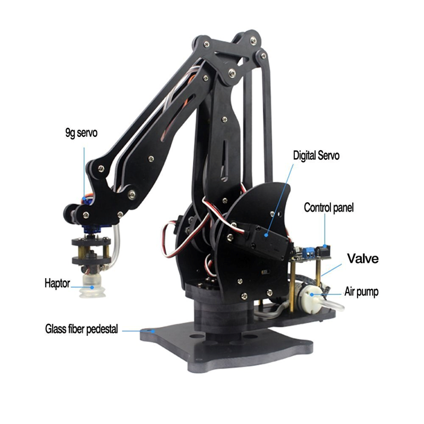

Is a robot working in the construction sector, its main function is to build using blocks in construction, which provides several advantages the most important of which
are:
Reduced consumption of material.
Increased operating flexibility and cost savings. Reduced labor costs.
The system enables a higher level of automation.
In many operations, human intervention can be eliminated.
R&D / Research - 3D CAPTURE BLOCK
